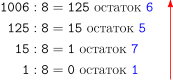
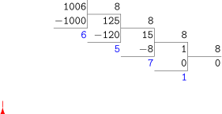
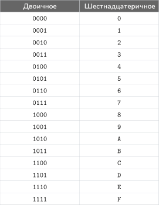
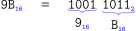
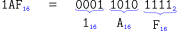
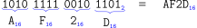
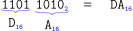
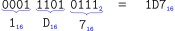

Системы счисления
Система счисления — это правила записи чисел с помощью специальных знаков — цифр, а также соответствующие правила выполнения операций с этими числами.
Мы рассмотрим позиционные системы счисления, в которых значение каждой цифры зависит от ее позици в числе. Например, в числе 127 цифра 1 обозначает сотни, цифра 2 - десятки, а цифра 7 - единицы.
Числа, которыми мы пользуемся в повседневной жизни, записываются в системе с основанием \(10\). Например, число \(253\) можно записать так:
Используя степени, получаем: \(100 = 10^2\), \(10 = 10^1\), \(1 = 10^0\). Тогда
Здесь видно, что каждый разряд равен цифре, умноженной на степень \(10\). Поэтому эту запись называют десятичной системой счисления.
Фраза «сотни, десятки и единицы» — это просто степени \(10\).
В десятичной системе 10 цифр: \(0, 1, 2, 3, 4, 5, 6, 7, 8, 9\).
Основание системы счисления — это количество различных цифр, используемых для записи чисел.
Чтобы явно показать основание системы, к числу добавляют маленький нижний индекс. Например, запись \(5192_{10}\) читается как «5192 в системе с основанием 10».
Кроме десятичной наиболее широко применяются ещё две системы счисления.
Двоичная — все данные в компьютерных устройствах хранятся и обрабатываются как числа, представленные в двоичной системе счисления.
Шестнадцатеричная используется для записи двоичных данных в более компактном виде. Её часто встречают при кодировании цветов и при записи адресов ячеек памяти.
В таблице ниже приведены примеры нескольких систем счисления с указанием их основания и алфавита (набора цифр).

Удобно посмотреть, как одно и то же десятичное число записывается в разных основаниях:
Вопросы к слайдам
1. Попробуйте предсказать следующее число в двоичной, пятеричной и шестнадцатеричной системах счисления.
2. Найдите числа, у которых в одной системе запись короче минимум на 2 символа, чем в другой. Чем это объясняется?
3. Какие числа на слайдах имеют двоичную запись, оканчивающуюся на \(\mathtt{0}\)? Как это связано с делимостью на \(2\)?
4. В какие моменты в троичной, пятеричной и восьмеричной системах происходит перенос через несколько младших разрядов сразу?
5. Почему \(\mathtt{100}_{10}\) записывается как \(\mathtt{144}_8\), \(\mathtt{64}_{16}\), \(\mathtt{1100100}_2\)?
Перевод из любой системы счисления в десятичную
Чтобы перевести число из любой системы в десятичную, достаточно разложить его в развёрнутую форму и сложить.
Развёрнутая форма записи числа — это представление числа как суммы произведений его цифр на соответствующие степени основания.
Например, для четырёхразрядного числа \((a_3 a_2 a_1 a_0)_p\) в системе с основанием \(p\), где \(a_3, a_2, a_1, a_0\) — цифры числа:

В десятичной системе это выглядит так:
Например, чтобы перевести \(\mathtt{1756}_8\) в десятичную, разложим число по степеням \(8\) и сложим:
Задача: переведите из шестнадцатеричной системы в десятичную.
a) \(\mathtt{75}_{16}\)
b) \(\mathtt{1F}_{16}\)
c) \(\mathtt{A03}_{16}\)
Решение:
Задача: переведите из двоичной системы в десятичную.
a) \(\mathtt{1111}_2\)
b) \(\mathtt{1010}_2\)
c) \(\mathtt{1001}_2\)
Решение:
Задачи для тренировки
1. Разложите числа по степеням основания:
a) \(\mathtt{534}_7\)
b) \(\mathtt{A2}_{16}\)
c) \(\mathtt{10101}_2\)
Ответ
a) \(\mathtt{534}_7 = 5\cdot 7^2 + 3\cdot 7^1 + 4\cdot 7^0\).
b) \(\mathtt{A2}_{16} = 10\cdot 16^1 + 2\cdot 16^0\).
c) \(\mathtt{10101}_2 = 1\cdot 2^4 + 0\cdot 2^3 + 1\cdot 2^2 + 0\cdot 2^1 + 1\cdot 2^0\).
2. Переведите в десятичную систему:
a) \(\mathtt{642}_8\)
b) \(\mathtt{3B}_{16}\)
c) \(\mathtt{11001}_2\)
Ответ
a) \(\mathtt{642}_8 = 6\cdot 8^2 + 4\cdot 8^1 + 2 = 384 + 32 + 2 = \mathtt{418}_{10}\).
b) \(\mathtt{3B}_{16} = 3\cdot 16^1 + 11\cdot 16^0 = 48 + 11 = \mathtt{59}_{10}\).
c) \(\mathtt{11001}_2 = 1\cdot 2^4 + 1\cdot 2^3 + 0\cdot 2^2 + 0\cdot 2^1 + 1\cdot 2^0 = \mathtt{25}_{10}\).
3. Проверьте корректность записи чисел в указанной системе счисления:
a) \(\mathtt{572}_7\)
b) \(\mathtt{19}_8\)
c) \(\mathtt{G3}_{16}\)
d) \(\mathtt{10102}_3\)
Ответ
Корректна только d): в системе с основанием \(3\) допустимы цифры \(0,1,2\).
a) некорректно (цифра \(7\) недопустима для основания \(7\)).
b) некорректно (цифра \(9\) недопустима для основания \(8\)).
c) некорректно (\(\mathtt{G}\) не является цифрой шестнадцатеричной системы).
4. Восстановите число по развёрнутой записи:
a) \(4\cdot 10^3 + 0\cdot 10^2 + 7\cdot 10^1 + 9\cdot 10^0\)
b) \(1\cdot 8^3 + 2\cdot 8^2 + 0\cdot 8^1 + 5\cdot 8^0\)
c) \(1\cdot 2^5 + 0\cdot 2^4 + 1\cdot 2^3 + 1\cdot 2^2 + 0\cdot 2^1 + 1\cdot 2^0\)
Ответ
a) \(\mathtt{4079}_{10}\).
b) \(\mathtt{1205}_8\).
c) \(\mathtt{101101}_2\).
5. Ответьте без полного перевода в десятичную систему:
a) какое из чисел больше: \(\mathtt{10000}_2\) или \(\mathtt{777}_8\)?
b) делится ли \(\mathtt{A30}_{16}\) на \(256\)?
c) почему \(\mathtt{7000}_8\) и \(\mathtt{111000000000}_2\) выглядят по-разному, но обозначают одно и то же число?
Ответ
a) \(\mathtt{777}_8\) больше, так как \(\mathtt{10000}_2 = 16\), а \(\mathtt{777}_8 = 511\).
b) Нет: для делимости на \(256 = 16^2\) последние две шестнадцатеричные цифры должны быть \(\mathtt{00}\), а здесь \(\mathtt{30}\).
c) Потому что основание системы разное. \(\mathtt{7000}_8 = 7\cdot 8^3\), а \(\mathtt{111000000000}_2 = 7\cdot 2^9\), и это одно и то же значение.
Перевод из десятичной в любую систему счисления
Это обратный процесс к развёрнутой форме: из значения числа восстанавливаем его цифры в системе с основанием \(p\).
Алгоритм извлечения цифр — это последовательное деление числа на основание \(p\) с записью остатков.
Остатки и есть цифры числа в системе с основанием \(p\), но они получаются от младшего разряда к старшему.
Поэтому итоговую запись составляем в обратном порядке: от последнего остатка к первому.
Например, переведём \(\mathtt{1006}_{10}\) в восьмеричную систему:

Читаем остатки снизу вверх (то есть в обратном порядке их получения): \(\mathtt{1006}_{10} = \mathtt{1756}_8\).
Если вычислять в тетради, то удобно делить столбиком и также выписывать получившиеся остатки снизу вверх.

Проверка обратным переводом:
Задача: переведите из десятичной системы в двоичную.
a) \(\mathtt{15}_{10}\)
b) \(\mathtt{10}_{10}\)
c) \(\mathtt{9}_{10}\)
Решение:
Читаем остатки снизу вверх: \(\mathtt{15}_{10} = \mathtt{1111}_2\).
Читаем остатки снизу вверх: \(\mathtt{10}_{10} = \mathtt{1010}_2\).
Читаем остатки снизу вверх: \(\mathtt{9}_{10} = \mathtt{1001}_2\).
Задача: переведите из десятичной системы в шестнадцатеричную.
a) \(\mathtt{117}_{10}\)
b) \(\mathtt{31}_{10}\)
c) \(\mathtt{2563}_{10}\)
Решение:
Читаем остатки снизу вверх: \(\mathtt{117}_{10} = \mathtt{75}_{16}\).
Так как \(\mathtt{15} = \mathtt{F}\), получаем: \(\mathtt{31}_{10} = \mathtt{1F}_{16}\).
Так как \(\mathtt{10} = \mathtt{A}\), получаем: \(\mathtt{2563}_{10} = \mathtt{A03}_{16}\).
Задачи для тренировки
1. Переведите числа:
a) \(\mathtt{26}_{10}\to ?_2\)
b) \(\mathtt{73}_{10}\to ?_8\)
c) \(\mathtt{254}_{10}\to ?_{16}\)
Ответ
a) \(\mathtt{11010}_2\).
b) \(\mathtt{111}_8\).
c) \(\mathtt{FE}_{16}\).
2. Переведите числа через последовательные деления:
a) \(\mathtt{45}_{10}\to ?_2\)
b) \(\mathtt{130}_{10}\to ?_8\)
c) \(\mathtt{170}_{10}\to ?_{16}\)
Ответ
a) \(\mathtt{45}:\mathtt{2}=\mathtt{22}\) ост. \(\mathtt{1}\), \(\mathtt{22}:\mathtt{2}=\mathtt{11}\) ост. \(\mathtt{0}\), \(\mathtt{11}:\mathtt{2}=\mathtt{5}\) ост. \(\mathtt{1}\), \(\mathtt{5}:\mathtt{2}=\mathtt{2}\) ост. \(\mathtt{1}\), \(\mathtt{2}:\mathtt{2}=\mathtt{1}\) ост. \(\mathtt{0}\), \(\mathtt{1}:\mathtt{2}=\mathtt{0}\) ост. \(\mathtt{1}\). Итого: \(\mathtt{101101}_2\).
b) \(\mathtt{130}:\mathtt{8}=\mathtt{16}\) ост. \(\mathtt{2}\), \(\mathtt{16}:\mathtt{8}=\mathtt{2}\) ост. \(\mathtt{0}\), \(\mathtt{2}:\mathtt{8}=\mathtt{0}\) ост. \(\mathtt{2}\). Итого: \(\mathtt{202}_8\).
c) \(\mathtt{170}:\mathtt{16}=\mathtt{10}\) ост. \(\mathtt{10}\), \(\mathtt{10}:\mathtt{16}=\mathtt{0}\) ост. \(\mathtt{10}\). Итого: \(\mathtt{AA}_{16}\).
3. Найдите и исправьте ошибки в переводе:
a) \(\mathtt{59}_{10} = \mathtt{3G}_{16}\)
b) \(\mathtt{100}_{10} = \mathtt{110010}_2\)
c) \(\mathtt{64}_{10} = \mathtt{80}_8\)
Ответ
a) Неверная цифра \(\mathtt{G}\). Правильно: \(\mathtt{59}_{10} = \mathtt{3B}_{16}\).
b) Пропущен один ноль в конце. Правильно: \(\mathtt{100}_{10} = \mathtt{1100100}_2\).
c) В восьмеричной системе нет цифры \(\mathtt{8}\). Правильно: \(\mathtt{64}_{10} = \mathtt{100}_8\).
4. Переведите и проверьте обратным переводом:
a) \(\mathtt{94}_{10}\to ?_2\)
b) \(\mathtt{94}_{10}\to ?_8\)
c) \(\mathtt{94}_{10}\to ?_{16}\)
Ответ
a) \(\mathtt{94}_{10} = \mathtt{1011110}_2\), проверка: \(64+16+8+4+2=94\).
b) \(\mathtt{94}_{10} = \mathtt{136}_8\), проверка: \(1\cdot 8^2+3\cdot 8+6=64+24+6=94\).
c) \(\mathtt{94}_{10} = \mathtt{5E}_{16}\), проверка: \(5\cdot 16+14=80+14=94\).
5. Объясните, почему остатки при делении на основание \(p\) можно использовать как цифры системы с основанием \(p\).
Ответ
Потому что при делении на \(p\) остаток всегда удовлетворяет \(0 \le r < p\), а это ровно диапазон допустимых цифр этой системы.
Быстрый перевод между двоичной и шестнадцатеричной

Тетрада — это группа из четырёх двоичных разрядов.
Если взять тетрады от \(\mathtt{0000}_2\) до \(\mathtt{1111}_2\), то получится ровно 16 разных вариантов — столько же, сколько цифр в шестнадцатеричной системе. Поэтому каждой шестнадцатеричной цифре соответствует одна тетрада (4 двоичных разряда). Это верно потому, что \(16^1 = 2^4\).
В некоторых тетрадах таблицы встречаются ведущие нули — это нули слева в записи числа. Они не меняют значение числа и нужны для удобства: чтобы дополнить запись до длины, кратной 4.
Например, в записи \(\mathtt{0011}_2\) два нуля слева — это ведущие нули, так как \(\mathtt{0011}_2 = \mathtt{11}_2\); они нужны только, чтобы число состояло из 4 разрядов.
В строке \(\mathtt{0000}_2\) синим выделены только три левых нуля: это дополняющие нули. Правый ноль оставляем обычным, потому что это минимальная запись числа \(\mathtt{0}_2\).
Перевод из шестнадцатеричной в двоичную
Алгоритм \(16 \to 2\):
- Идём по цифрам слева направо и заменяем каждую её тетрадой из таблицы.
- В каждой тетраде сохраняем все 4 разряда, включая ведущие нули.
- Записываем тетрады подряд.
- Если нужно, убираем ведущие нули слева у всей двоичной записи (кроме числа \(\mathtt{0}\)).
Задача: переведите из шестнадцатеричной в двоичную.
a) \(\mathtt{C50A}_{16}\to ?_2\)
b) \(\mathtt{9B}_{16}\to ?_2\)
c) \(\mathtt{1AF}_{16}\to ?_2\)
Решение:
a)
b)

c)

Перевод из двоичной в шестнадцатеричную
Алгоритм \(2 \to 16\):
- Разбиваем двоичную запись справа налево на тетрады (группы по 4 разряда).
- Если в левой тетраде меньше 4 разрядов, дополняем её слева нулями.
- Каждую тетраду заменяем одной шестнадцатеричной цифрой по таблице.
- Записываем полученные шестнадцатеричные цифры слева направо.
- Удаляем ведущие нули.
Задача: переведите из двоичной в шестнадцатеричную.
a) \(\mathtt{1010111100101101}_2\to ?_{16}\)
b) \(\mathtt{11011010}_2\to ?_{16}\)
c) \(\mathtt{111010111}_2\to ?_{16}\)
Решение:
a)

b)

c)

Задачи для тренировки
1. Переведите в двоичную систему:
a) \(\mathtt{AF}_{16}\)
b) \(\mathtt{9B}_{16}\)
c) \(\mathtt{C5}_{16}\)
Ответ
a) \(\mathtt{10101111}_2\).
b) \(\mathtt{10011011}_2\).
c) \(\mathtt{11000101}_2\).
2. Переведите в шестнадцатеричную систему:
a) \(\mathtt{10101100}_2\)
b) \(\mathtt{111001}_2\)
c) \(\mathtt{110101111}_2\)
Ответ
a) \(\mathtt{AC}_{16}\).
b) \(\mathtt{39}_{16}\).
c) \(\mathtt{1AF}_{16}\).
По материалам:
1. К. Ю. Поляков, Е. А. Еремин. Учебник информатики для 10–11 классов. Углубленный уровень.
2. Anthony Croft, Robert Davison. Foundation Maths. Pearson.
3. ВМК МГУ — школе. Информатика: пособие для подготовки к ЕГЭ.
В шестнадцатеричной системе после \(\mathtt{9}\) используют буквы \(\mathtt{A}\)–\(\mathtt{F}\): символов \(\mathtt{0}\)–\(\mathtt{9}\) не хватает для 16 разных цифр. Здесь \(\mathtt{A}\)–\(\mathtt{F}\) — это тоже цифры (одиночные символы), которые обозначают значения \(10\)–\(15\): \(\mathtt{A}=10, \mathtt{B}=11, \dots, \mathtt{F}=15\).
Важно различать цифру и число: цифра — один символ в записи, а число — само значение. Например, в записи \(314_{10}\) число равно \(314\), а \(3\), \(1\) и \(4\) — цифры этого числа.
В позиционной записи каждая цифра должна быть одним символом, иначе запись станет неоднозначной. Поэтому значение \(15\) обозначают одной цифрой \(\mathtt{F}\).